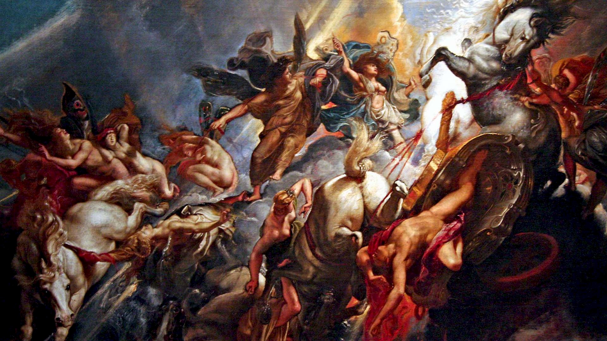

Grčka mitologija sastoji se od mitova o bogovima i herojima, a korijen joj je u vjerovanju starih Grka.
Grčki bogovi izgledali su kao ljudi, imali vrline i mane kao ljudi, razlikovali su se po tome što su bili besmrtni.
Bili su vise-manje neranjivi te sposobni postati nevidljivi i putovati brzinom svjetlosti, a živjeli su na Olimpu.
Grčka mitologija(Hrvatska verzija)
Greek mythology(engleska verzija)
